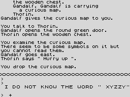

| How the text is stored and told |
The game has 177 messages, 80 room descriptions and names and 61 object names, and holds none of them as text. A message is a small program for RUN_MESSAGE, and a name is three dictionary references. This page takes one message apart, runs it for three different speakers through the game's own code, measures what the scheme saves, and follows the text to the screen.
RUN_MESSAGE walks the message a byte at a time (read):
| Byte | Means |
|---|---|
| bit 7 set | the first of a two-byte word reference, high byte first: twelve bits of dictionary offset from $6000 and a flag nibble; flags 2, 3 and 6 also end the message (plainly, with a full stop, or with a new line). PRINT_WORD prints it |
| $60-$7F | one of the 32 common words in COMMON_WORDS, a byte each |
| $20-$5F | a literal character: punctuation, and words the dictionary lacks, spelled out |
| $00-$13 | a control code: its handler from CONTROL_CODES is called, and the message goes on |
| $14-$16 | a control code that ends the message |
The control codes, with their handlers read from the table:
| Code | Handler | Prints |
|---|---|---|
| $00 | MC_PUSHED_OBJECT | an object whose record the caller pushed, with no article |
| $01 | MC_PUSHED_WORD | a word the caller pushed |
| $02 | MC_JUMP | jump by the signed byte after it |
| $03 | MC_INSTRUMENT_NOUN | the instrument's noun (WEAPON_NAME) |
| $04 | MC_PUSHED_WITH_ARTICLE | a word the caller pushed, with its article |
| $05 | MC_NOTHING | nothing |
| $06 | MC_ACTOR | the actor's name, or YOU |
| $07 | MC_TARGET | the target, with its article |
| $08 | MC_BACKSPACE | a backspace: the next word joins the last |
| $09 | MC_INSTRUMENT | the instrument, with its article |
| $0A | MC_NOTHING | nothing |
| $0B | MC_SUBMESSAGE | the message the signed byte after it points at |
| $0C | MC_ACTOR_HIS | HIS, or YOUR when the actor is the player |
| $0D | PRINT_LITERAL | a new line (the literal character) |
| $0E | MC_TARGET_HIS | HIS, or YOUR, for the target |
| $0F | MC_NOTHING | nothing |
| $10 | MC_ACTOR_IS | the actor and IS, or YOU ARE |
| $11 | MC_TARGET_IS | the target and IS, or YOU ARE |
| $12 | MC_NOTHING | nothing |
| $13 | MC_PUSHED_IS | a pushed object and IS |
| $14 | MC_END_LINE | end: a new line |
| $15 | MC_END_STOP | end: a full stop and a new line |
| $16 | MC_END | end |
And the common words, the byte that stands for each:
| $60 A | $61 AND | $62 ARE | $63 AT | $64 BE | $65 BLOW | $66 BUT | $67 CANNOT |
| $68 CARRYING | $69 DO | $6A DOOR | $6B DRAGON | $6C FALL | $6D FROM | $6E HERE | $6F I |
| $70 IN | $71 IS | $72 IT | $73 NOT | $74 OF | $75 ON | $76 SEE | $77 SOME |
| $78 THE | $79 THERE | $7A THIS | $7B TO | $7C TOO | $7D WHAT | $7E WITH | $7F YOU |
The message at $AF20 is one of the wounds a fight can print. Each element as RUN_MESSAGE reads it, and what the game printed while it was the element in hand -- probed at $72F4, where RUN_MESSAGE picks up the next element, and at PRINT_CHAR -- for three speakers: the player attacking Thorin with the sword, Thorin attacking the player with it, and the warg attacking the wood elf bare-handed (so there is no instrument's noun to print):
| At | Bytes | Kind | Holds | you to thorin | thorin to you | vicious warg to wood elf |
|---|---|---|---|---|---|---|
| $AF20 | 06 | control code | $06: the actor's name, or YOU | you | thorin | the vicious warg |
| $AF21 | 88 3E | word | BRANDISH, flags $0 | brandish | brandishes | brandishes |
| $AF23 | 0C | control code | $0C: HIS, or YOUR when the actor is the player | your | his | his |
| $AF24 | 03 | control code | $03: the instrument's noun (WEAPON_NAME) | sword | sword | - |
| $AF25 | 2C | literal | ',' | , | , | , |
| $AF26 | 66 | common word | $66: BUT | but | but | but |
| $AF27 | 11 | control code | $11: the target and IS, or YOU ARE | thorin is | you are | the (new line)elf is |
| $AF28 | 75 | common word | $75: ON | on | (new line)on | on |
| $AF29 | B9 6F | word | GUARD, flags $3; ends with a full stop | guard. (new line) | guard. (new line) | guard. (new line) |
Whole, as the three printed it:
Each was started at the beginning of a story line. Where the next word would have passed the 42nd column, PRINT_WORD began a new line before it -- the (new line) in the table -- and the full stop that ends the message is followed by one too.
9 elements, 11 bytes. The same bytes say YOU or THORIN, YOUR or HIS, ARE or IS; and the verb agrees with its subject: PRINT_WORD adds an ending when the sentence is about someone other than the player (ACTING ($B6EA) not zero), if the word allows one (bit 7 of its second dictionary byte) and its flags do not forbid it: $40 always inflects, $50 never, $10 agrees with the target instead of the actor, anything else with the actor.
The ending is named by bits 5-7 of the word's third byte, from ENDINGS; the fourth is how CARRY becomes CARRIES -- a backspace takes the Y back off:
| Ending | Bytes | Adds |
|---|---|---|
| 0 | 73 00 00 00 | s |
| 1 | 65 73 00 00 | es |
| 2 | 69 65 73 00 | ies |
| 3 | 08 69 65 73 | (backspace)ies |
| 4 | 64 00 00 00 | d |
| 5 | 69 6E 67 00 | ing |
A noun's reference carries its article (ARTICLE): bit 7 marks a proper name, printed with no article and a capital (except YOU); otherwise bits 4-6 pick one of four from ARTICLES -- or, in the input window and while an action is being narrated, from the second four, which say THE for everything but SOME:
| Choice | Normally | Narrating |
|---|---|---|
| 0 | THE | THE |
| 1 | A | THE |
| 2 | AN | THE |
| 3 | SOME | SOME |
Sentences about actions are not stored at all: NARRATE_ACTION builds them from the action's pattern (see How a sentence is understood), which is why the characters' doings read so alike.
Measured over all 177 stored messages, $AD7D on, walked by the build's decoder (the same tests RUN_MESSAGE makes): 2397 bytes hold 611 word references, 413 common-word bytes, 526 literal characters and 227 control codes. Spelled out, the fixed text is 5645 characters with its spaces -- 3560 from the references, 1559 from the common words and 526 literals -- so 2.4 characters to the byte before any name is printed. Run through RUN_MESSAGE itself with the player speaking, the 159 messages that do not print something a caller pushed (18 do) printed 5898 characters from 2259 bytes: 2.6 to 1. A room or object name costs six bytes -- three references -- however long its words, and there are 80 rooms and 61 objects. The word list the messages draw on, SECOND_LIST, is reached by no index at all: a message names each word by its offset.
Six places inside messages are ways in of their own: five share another message's tail (the east bank of the black river is the end of the west bank's description), and one starts on the second byte of a word reference, which it reads as a control code.
Everything goes out through PRINT_CHAR, which asks PRINT_GATE first: nothing is printed unless the action is for real (DOING_IT) and printing is on (the actor can be seen). Then INPUT_STYLE ($B701) chooses the window. The story goes to STORY_CHAR: row 17, in the game's own six-pixel font (FONT, drawn by NARROW_CHAR at any pixel, so 42 columns fit), every letter lower case except the first of a sentence, the whole window scrolling up over the picture. The parser's replies, the prompt and the tape messages go to INPUT_CHAR: rows 19-23, in the ROM's font and capitals. The screen after the line followed on the parsing page and then XYZZY, drawn from screen memory:

The story above the wavy divider, scrolled up over where Bag End's picture was; below it the input window, with the prompt and the parser's complaint about XYZZY.
Line breaking. PRINT_WORD builds each word in WORD_BUFFER first and, if it would not fit on the line, starts a new one before it: words are never split (read, and visible above).
The pause. At the end of each story line STORY_CHAR counts down NO_PAUSE_LINES ($B716); while it lasts there is no pause, and once it is 0 the game polls the keyboard up to 32768 times before scrolling -- about 0.58 s by the instruction timings -- or less if a key is pressed. The main loop sets it to 9 before every line typed. Measured on the line followed on the parsing page, the time from the end of each story line to its scroll:
| Line | NO_PAUSE_LINES | T-states | Time |
|---|---|---|---|
| 1 | 9 | 103 | 0.00 s |
| 2 | 8 | 103 | 0.00 s |
| 3 | 7 | 103 | 0.00 s |
| 4 | 6 | 103 | 0.00 s |
| 5 | 5 | 103 | 0.00 s |
| 6 | 4 | 103 | 0.00 s |
| 7 | 3 | 103 | 0.00 s |
| 8 | 2 | 103 | 0.00 s |
| 9 | 1 | 103 | 0.00 s |
| 10 | 0 | 2,031,678 | 0.58 s |
| 11 | 0 | 2,031,678 | 0.58 s |
| 12 | 0 | 2,031,678 | 0.58 s |
The first nine lines scroll at once; the first of them waited only for the ENTER the line was typed with to be let go. From the tenth, each line waits the full count.